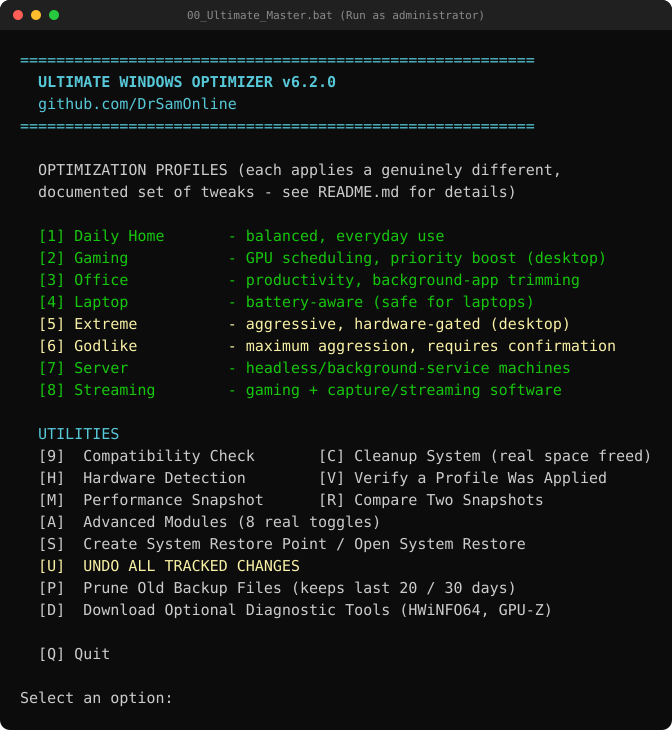
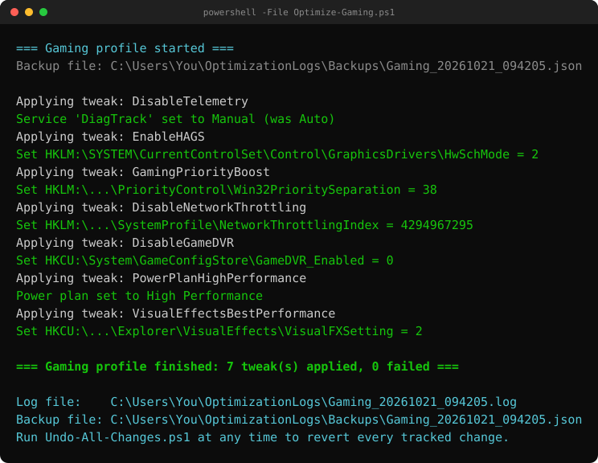
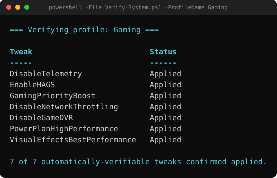
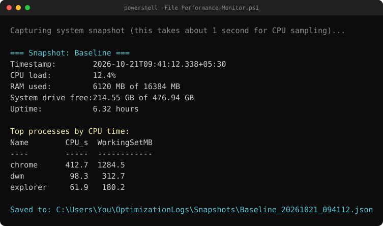

Reversible by design
Every registry value, service, hibernation setting and power plan is captured before it changes. Undo-All-Changes.ps1 restores the earliest recorded original — nothing else.
The Ultimate Windows Optimizer is a PowerShell + batch toolkit that applies documented, reversible performance and debloat tweaks to any Windows 10/11 install — wired into profiles, with real backups, real logging and a one-command undo. No install. No telemetry. No network calls.


> _ no percentage gains promised — measure your own with the built-in snapshot & compare tools.
Most "optimizers" are one-way doors. This one records the previous state of everything it touches and can put your machine back exactly as it was.
Every registry value, service, hibernation setting and power plan is captured before it changes. Undo-All-Changes.ps1 restores the earliest recorded original — nothing else.
Logs land in %USERPROFILE%\OptimizationLogs, with per-run JSON backups written only after a change actually succeeds — so undo never "restores" something that never applied.
Daily Home, Gaming, Office, Laptop, Extreme, Godlike, Server and Streaming — each applies a genuinely different, documented tweak set, read from one source-of-truth catalog.
Verify-System.ps1 reads the live registry and service state back and tells you what is actually applied — it never assumes a tweak worked.
Snapshot CPU load, RAM, disk and top processes before and after, then Compare-Results.ps1 diffs two real snapshots. No canned numbers, ever.
No installer, no Invoke-Expression, no scheduled tasks, no security-product changes. Zero outbound calls, zero telemetry, zero credential access.
Four moves. The first two are the safety net; the last two are the payoff.
Right-click scripts\00_Ultimate_Master.bat → Run as administrator. The launcher exits immediately if it isn't elevated.
Option 9 runs real PASS/FAIL checks (admin, OS build, PowerShell, RAM, disk, System Restore). Option S creates a System Restore point.
Option M saves a labeled snapshot — call it Baseline. Then choose the profile (1–8) that matches your machine.
V verifies a profile was applied, R compares two snapshots for real before/after numbers, and U reverts every tracked change.
Every profile is a distinct, documented set of tweaks — and each one says what it deliberately does not do.
| Profile | Key tweaks | Notably does not |
|---|---|---|
| [1] Daily Home | Telemetry off, Start-menu ads off, background apps off, balanced visual effects, Balanced power plan | No GPU / priority / memory tweaks |
| [2] Gaming | GPU hardware scheduling, foreground priority boost, network throttling removed, Game DVR off, High Performance plan | Not for battery-powered laptops |
| [3] Office | Background-app + Xbox-service removal, explicit balanced priority separation | No GPU scheduling or priority boost |
| [4] Laptop | USB selective suspend, HAGS disabled to save power on hybrid-GPU laptops, Balanced plan | Never disables hibernation or paging |
| [5] Extreme | Everything in Gaming + hibernation removed; paging tweak only if RAM ≥ 16 GB; Superfetch off only on confirmed SSD | Desktop only |
| [6] Godlike | Everything in Extreme + Windows Search indexing off + Xbox services off | Requires typing CONFIRM — trades search speed |
| [7] Server | Search indexing & Xbox services off, hibernation removed, background-service CPU priority (opposite of Gaming) | No GPU / gaming tweaks |
| [8] Streaming | Gaming tweaks + SystemResponsiveness lowered so capture/encoding isn't CPU-starved | — |
> _ the profile catalog in scripts/UWO.psm1 is the single source of truth — this table, the verifier and what runs can no longer drift apart.
Faithful renders of the toolkit's real console output — applying a profile, verifying state, and snapshotting performance.




No install step — it's scripts. Grab the archive, unzip it anywhere, and run the launcher as administrator.
Compatibility-Check.ps1 first (menu 9)Performance-Monitor.ps1 and Compare-Results.ps1 to measure your own real before/after numbers.Undo-All-Changes.ps1 reads every backup and restores the earliest recorded original. It supports -WhatIf to preview, and tolerates corrupted backup files without aborting.Invoke-Expression, no scheduled tasks and no security-product changes. An optional dependency menu only opens official vendor download pages — it never silently runs anything.CONFIRM because it disables Windows Search indexing.Compatibility-Check.ps1 (menu 9) first to confirm your machine meets these.